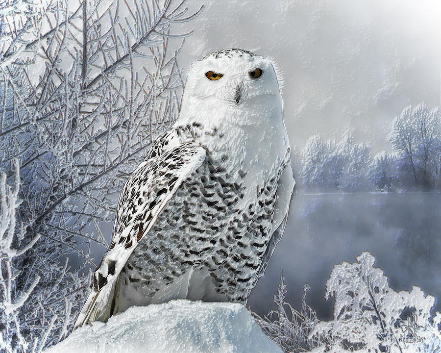

cheetah

A cheetah's lightweight body and long legs make it the fastest land animal, reaching speeds up to 120 km/h in short bursts.
Scientific Name: Acinonyx jubatus
Average Length: 150 centimeters
Average Lifespan: 10-12 years
Habitat: Savannas and open grasslands of Africa and parts of Iran
Cheetahs are built for speed, with aerodynamic bodies, large nasal passages for better oxygen intake, and long tails for balance. Unlike other big cats, cheetahs rely on their incredible acceleration to chase down prey rather than strength. Their distinctive black "tear marks" help reduce glare from the sun, improving their hunting focus.
snowy owl
A snowy owl's white feathers help it blend into its Arctic environment, making it a master of stealth and survival.
Scientific Name: Bubo scandiacus
Average Length: 71 centimeters
Average Lifespan: 10 years in the wild, up to 28 years in captivity
Habitat: Arctic tundra of North America and Eurasia
Snowy owls are known for their striking white plumage and piercing yellow eyes. Unlike most owls, they are diurnal, meaning they are active during the day. They are expert hunters, feeding mainly on lemmings and other small mammals. Their thick feathers keep them warm in extreme cold.